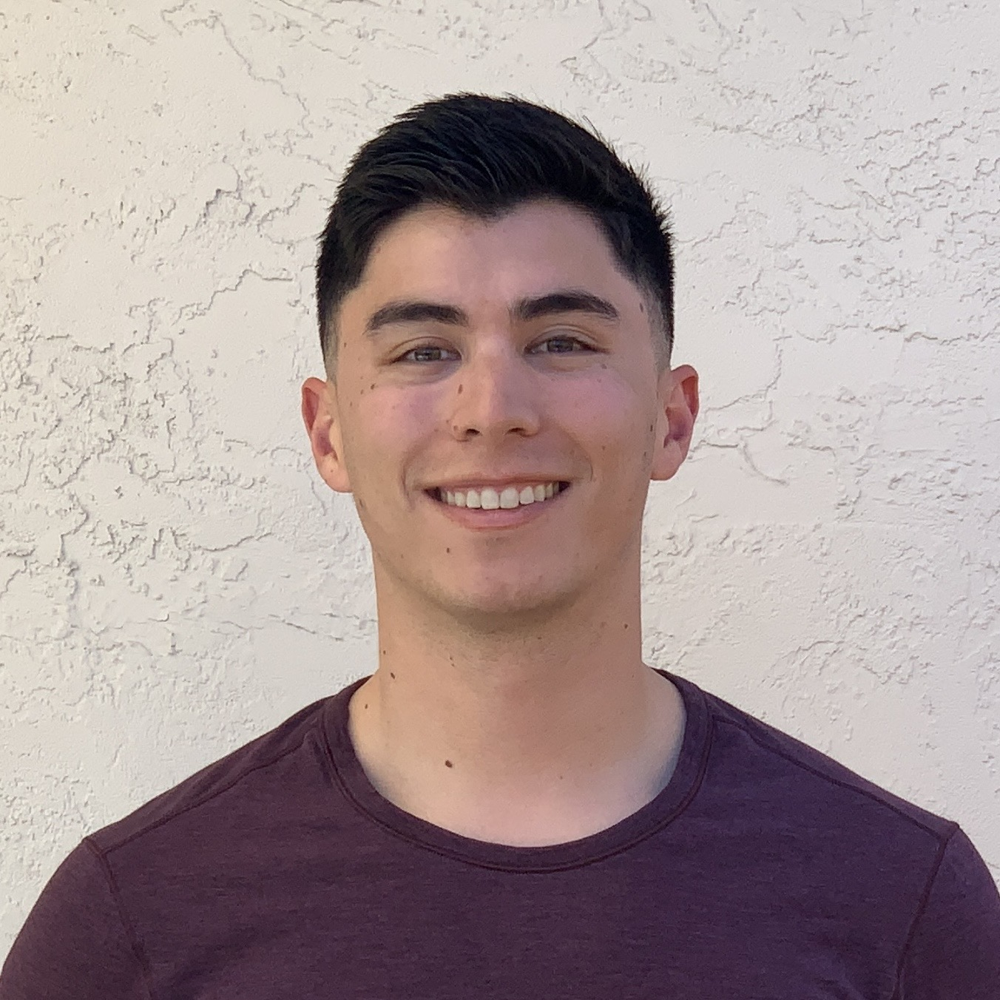

Travis Lyons

Summary
I am a motivated and organized professional with experience in project management, healthcare Information Technology and Data Center Infrastructure systems.
Education
- Bachelor of Science, Nutrition & Food Science - California State University, Chico
Work Experience
Associate Software Engineer - Stanford Health Care, Technology & Digital Solutions
March 2024 - present
- Product Manager for internal "Secure GPT (beta)" AI chat service.
- Azure Cloud Tenant Administration
- Platform metrics gathering and reporting to infrastructure stakeholders
Infrastructure Systems Analyst - Stanford Health Care, Technology & Digital Solutions
August 2022 - March 2024
- Project and Portfolio Management responsibilities
- Led major Infrastructure platform enhancement initiatives
- Facilitated Enterprise solution deployment and end user training/tool adoption exercises
Skills
- Communication
- Project Management
- Organizational Skills
- Microsoft Office Suite
- Microsoft Azure Certified
- GitHub Certified
Awards and Certifications
- Microsoft Certified: Azure Fundamentals
Other
© Travis Lyons. All rights reserved.